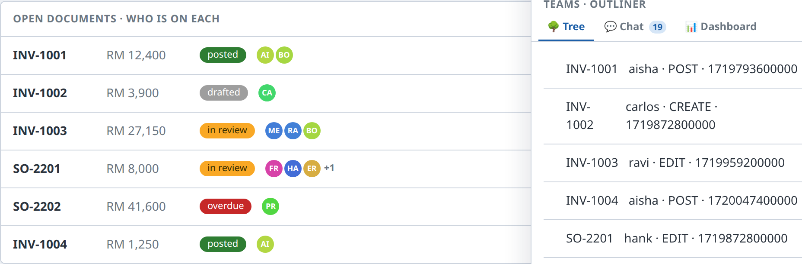
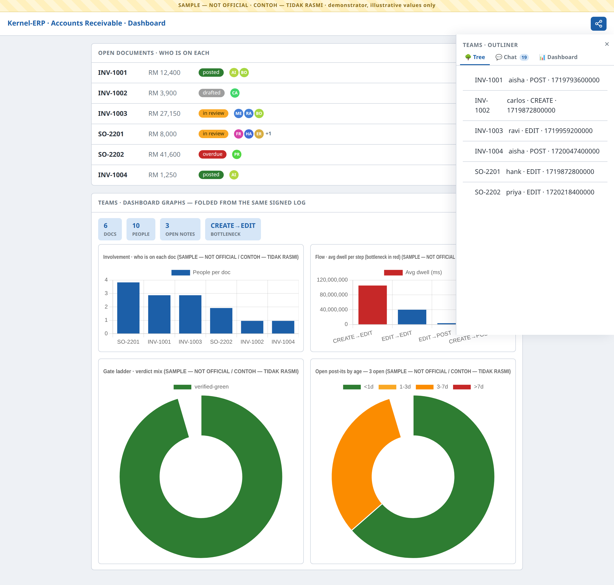
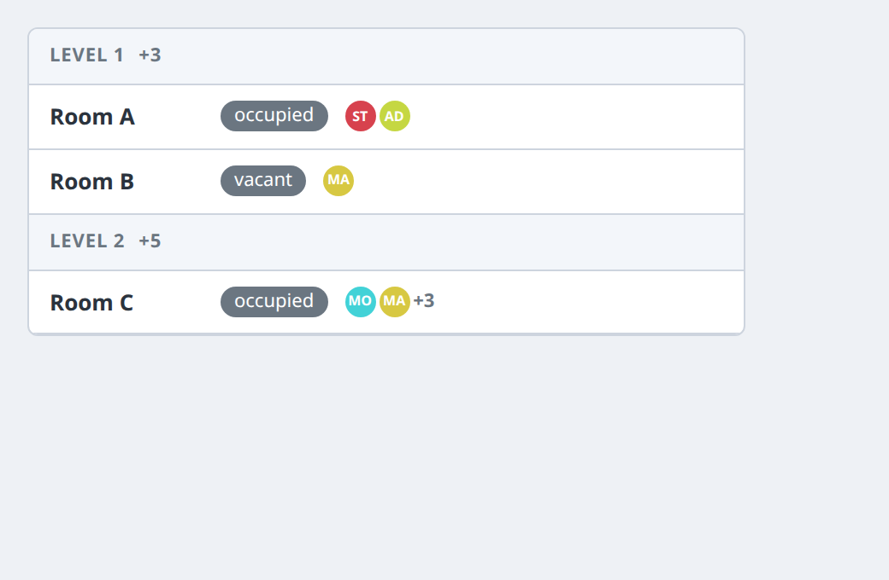
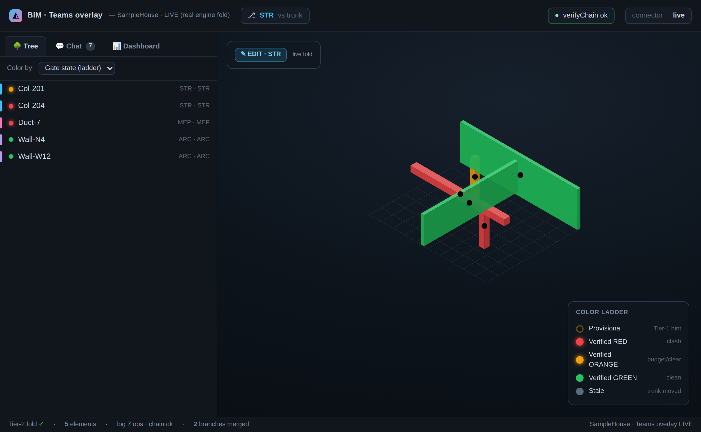

Teams Overlay — Collaboration & Universal Optics (ALPHA)¶
⚠ DEMONSTRATOR — NOT OFFICIAL. Every screen and generated chart in this guide carries the
CONTOH — TIDAK RASMI/SAMPLE — NOT OFFICIALwatermark. The names, documents and numbers are illustrative demo values — this is a demonstrator, not a production collaboration system.
The Teams overlay turns any surface — the Modeller, the Viewer, or Kernel-ERP — into a collaborative one. It is not a separate app. One toggle paints who-did-what onto the screens you already have: coloured dots on the very rows and elements you work with, a history you can read, a chat that is the signed log, and dashboard graphs — the same overlay, the same grammar, whether you are authoring a building or posting an invoice.
One signed op-log · a few optics, each answering one question · the same overlay on every surface.
This is a task-oriented manual. If you just want to use it, read Getting started and Common tasks. If you want to know how it works (or why every number is trustworthy), read Under the hood.
Getting started (about 2 minutes)¶
The overlay is off by default — until you turn it on, the screen is byte-for-byte unchanged.
- Open any surface. A Kernel-ERP window (e.g. Accounts Receivable), a building in the Viewer, or the Modeller — the overlay works the same on all three.
- Find the Teams pill. Look on the toolbar for the share glyph (three linked nodes). It is the host's own icon — the overlay borrows the app's icon set, it never imposes its own.
- Toggle it on. The pill lights with the host's active colour and a side pane — the Teams Outliner —
slides in. Coloured who-dots appear on each row: one dot per person who touched it, the colour is that
person's identity, the letters are their initials, and a
+Ncollapses a crowd. - Toggle it off. Tap the pill again. Every dot and the pane are removed and the screen returns to the exact state it started in — the overlay never leaves residue.

That's the whole interaction model: open → pill → who-dots + Outliner → toggle off. Everything below is a variation on it.
Common tasks¶
See who is on each document (or element)¶
Turn the overlay on. Each row grows a cluster of identity dots after its status chip:
| You see | Meaning |
|---|---|
| a coloured dot with initials | a person who touched this record; the colour is that person (same person, same colour, everywhere) |
| several dots on one row | everyone currently on it — hover a dot for name · last action · when |
a +N badge |
the crowd overflowed — N more people are on this record than the row shows |
Nothing is invented: every dot is a real author of a real signed operation. A record with no activity has no dots.
Read the history — the Tree tab¶
The Outliner opens on Tree — one row per record with who last touched it, the action, and when (blame). It is a pure replay of the log, so the same read always gives the same answer; there is no separate audit table.
The chat that is the log — the Chat tab¶
Switch to Chat. Every line is a signed operation rendered as a message — author · verb · target. The badge on the tab counts them. There is no side-channel chat to fall out of sync: the conversation and the ledger are the same object.
Read the numbers — the Dashboard tab & graphs¶
Switch to Dashboard, or read the graph gadgets on the ERP dashboard itself. Each is a read-only fold of the same signed log — never a hand-entered figure:
| Graph | Answers | Colour language |
|---|---|---|
| Involvement (bar) | how many people are on each document | host blue #1c5fa8 |
| Flow (bar) | average dwell per process step — the bottleneck is red | blue, bottleneck #c62828 |
| Gate ladder (doughnut) | the verdict mix across the work | green #2e7d32 · orange #f9a825 · red #c62828 · provisional #9e9e9e |
| Post-it aging (doughnut) | open notes by age | <1d #2e7d32 · 1-3d #f9a825 · 3-7d #fb8c00 · >7d #c62828 |

On a building — who-dots on the rooms¶
In the Viewer's Find panel, the same overlay lands on the Storey → Rooms result rows: the who-dots
append after each room's state chip, and each storey header rolls up a +N density of the people active
below it. It is the identical engine as the ERP rows — only the anchor changes (a room's guid instead of a
document id).

Pin a note — post-its¶
Any dot or row can carry a post-it: a signed note pinned to a universal anchor (a document, a field, a room, an element). Notes are private-first and promote to shared in one operation; they age into the Dashboard's post-it aging doughnut using the same colour language as the rest of the platform.
Explore a "what-if" — branches & the merge gate¶
The overlay carries git-style branches over the one log — "you build that wing, I build this, then we join up." When two branches merge, a gate checks them for you, and the gate is the right one for the surface:
- On the Modeller / Viewer building side — a spatial gate: it flags where two branches' elements clash in space.
- On the schedule side — a PERT gate: it flags dependency violations (a task starting before its predecessor finishes), dependency cycles, and resource double-bookings (one crane, two overlapping jobs).
The branch/merge/history machinery is universal; only the gate differs by surface. Elements resolve to the same colour ladder — red (a real conflict) beats orange (over budget / soft) beats green (clean), with stale when the trunk has moved on since you branched.
The same overlay — on the building, too¶
Everything above is the ERP view. Open the Modeller or Viewer and the identical overlay renders over the 3D model: the tabbed Outliner (Tree / Chat / Dashboard), identity-coloured dots on elements, and the colour ladder — one grammar, two surfaces.

The optics at a glance (reference)¶
| Optic | The one question | Where |
|---|---|---|
| Who-dots | Who is on this record / element? | on every row and element — colour = person, +N = crowd |
| Tree | Who last touched it, and when? | Outliner tab — blame, a pure log replay |
| Chat | What's the conversation? | Outliner tab — the chat is the signed log |
| Dashboard | Give me the numbers. | Outliner tab + ERP graph gadgets — folds, never hand-typed |
| Find placement | Who is active in this room / storey? | Viewer Find panel — dots on rooms, +N per storey |
| Merge gate | Do these two branches conflict? | on merge — spatial clash (building) or PERT dep/resource (schedule) |
Off by default, always. Until you toggle the pill, the overlay adds zero DOM — the host screen is pixel-identical. Toggle off and it reverts exactly.
It speaks the host's language. The pill is built from the host's icon set, the pane is the host's own
panel shell, and every colour resolves the host's design tokens (iDempiere blue #1c5fa8, the .bim-panel
chrome) — so the overlay reads as a native part of whichever app you're in, never a bolt-on.
Under the hood — why every dot is trustworthy¶
You don't need this to use the overlay, but it explains why two people always see the same thing.
-
One signed op-log. Everything — an edit, a post, a post-it, a schedule change — is an append-only signed operation. Each op chains to the previous (
verifyChain); amending one breaks the chain. Every optic is a pure fold (replay) of this log — so a dot, a blame line, a graph bar and a gate verdict are all computed, never stored, and two reads are bit-identical. -
Colour = identity, deterministically. A person's dot colour is a pure hash of their signer key — same person, same colour, on every surface, with no palette table to drift. Identity colour is deliberately kept out of the state palette, so "who" never reads as "status".
-
NON-INVENT, everywhere. Every dot is a real op's author; every graph series is read from the fold; a record with no activity shows nothing. Where an operation refers to a room or element the overlay can't find, it is honestly reported as un-placed — never painted onto a random row to look busy.
-
Two merge gates, one engine. Branch / merge / diff / blame is universal git over the op-log. The only per-surface plug-in is the gate: a spatial clash check for the building, a PERT dependency/resource check for the schedule. Both fold deterministically and resolve to the same red > orange > green ladder.
-
Three distinct timelines — kept separate on purpose. ① the 4D Gantt Time Machine (the construction schedule, tasks × calendar — it lives in the Viewer); ② the World/History op-log (who/what/when events — the Teams core, powering blame and replay); ③ the What-If Blue-dot (git branches over the log). They are never conflated: the World/History timeline is the substrate, not the Gantt.
Troubleshooting¶
| Symptom | What it means | What to do |
|---|---|---|
| No Teams pill | The surface isn't wired for the overlay yet (it's off-by-default and rolls out per surface). | Use a surface where it's enabled (the ERP AR demo, the standalone showcase). |
| A row has no dots | No signed operation has touched that record. | Expected — the overlay never fabricates activity to fill a row. |
| A dot's colour looks like a status | It shouldn't — identity hues are kept out of the state palette. | Hover it: a dot always shows name · action · when; status lives in the chip, not the dot. |
| The pane looks foreign to the app | A styling token didn't resolve. | The overlay consumes host tokens (--idmp-* / .bim-panel); on a host that exposes them it matches exactly — report the surface if it doesn't. |
| Toggled off and something stayed | The overlay removes all its DOM on toggle-off (proven pixel-identical). | Toggle again; a residue would be a bug — report it. |
Related¶
The Teams overlay supplies the collaboration + optics layer; the surfaces supply the work:
- The HR / Tenancy / Operate module is the operate-phase cousin — room-level lenses on the building. Teams and HR coexist as separate overlays over the same model; on a room row you may see HR's occupancy wash and Teams' who-dots, each answering its own question.
- BIM Viewer Guide · DAGeVu Modeller Guide · Kernel-ERP Guide — the three surfaces the overlay rides on.
Back to the User Guide.